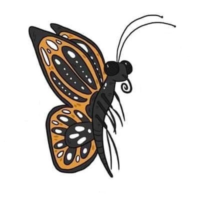

Aunque existen múltiples especies de mariposas, la mayoría son herbívoras. Ingieren flores, hojas, raíces y tallos como oruga y finalmente el néctar. Ciertos tipos de mariposas, de todos modos, son carnívoras. Para reproducirse, los machos realizan diferentes cortejos. Lo habitual es que se exhiban ante la hembra y produzcan feromonas. El olor de dichas feromonas termina recubriendo a la hembra.
> Gardey, A; Pérez, J. (2018). Definición de mariposa - Qué es, Significado y Concepto. Disponible en https://definicion.de/mariposa/. (Recuperado el 6 de Noviembre de 2022).
> Gardey, A; Pérez, J. (2018). Definición de polilla - Qué es, Significado y Concepto. Disponible en https://definicion.de/polilla/. (Recuperado el 6 de Noviembre de 2022).